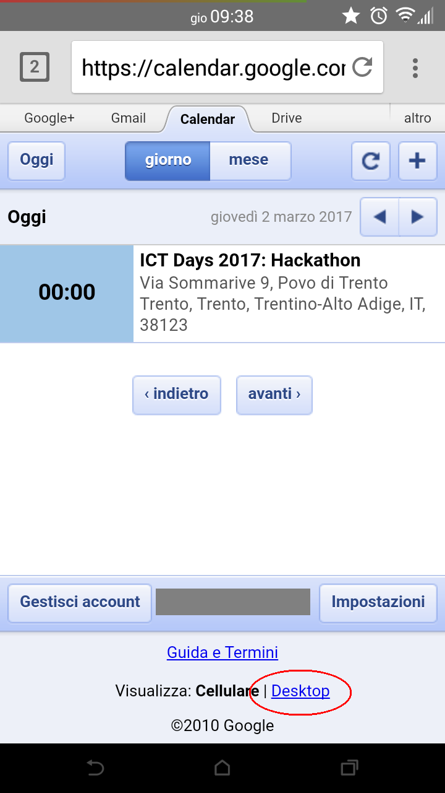
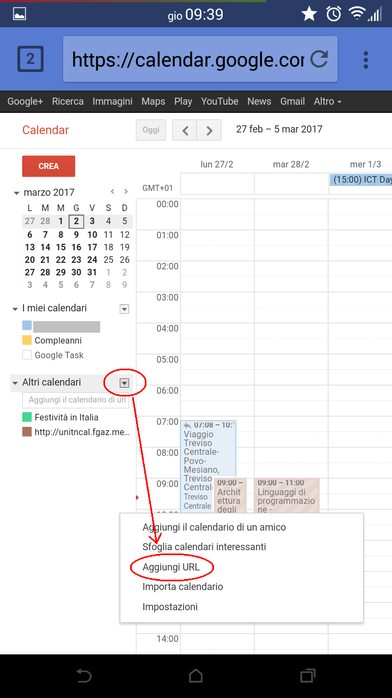
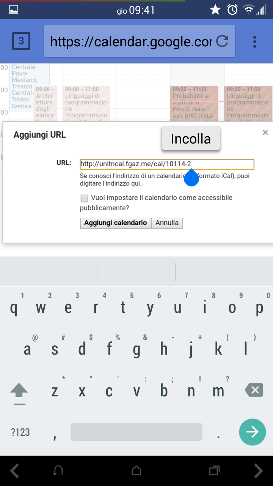

← Torna alla home
Istruzioni per Google Calendar
- Copiare il link del calendario come descritto nella home;
-
Dato che purtroppo google calendar si arrabbia se i link sono troppo lunghi,
accorciarlo usando un servizio come is.gd
- Aprire il browser che si preferisce (Chrome, Firefox, eccetera) e collegarsi alla pagina: google.com/calendar;
- Fare il login su Google se necessario;
- se appare l'interfaccia mobile, cliccare in fondo alla pagina sul link "Visualizza: Desktop";
- Sulla barra che vi si presenta a sinistra, sotto la voce Altri calendari, aprire il menu a tendina e cliccare su Aggiungi URL;
- Incollare il link (tasto destro => Incolla) e cliccare su Aggiungi calendario;
- Le lezioni dovrebbero apparire nel calendario
Screenshots:
- 
- 
- 